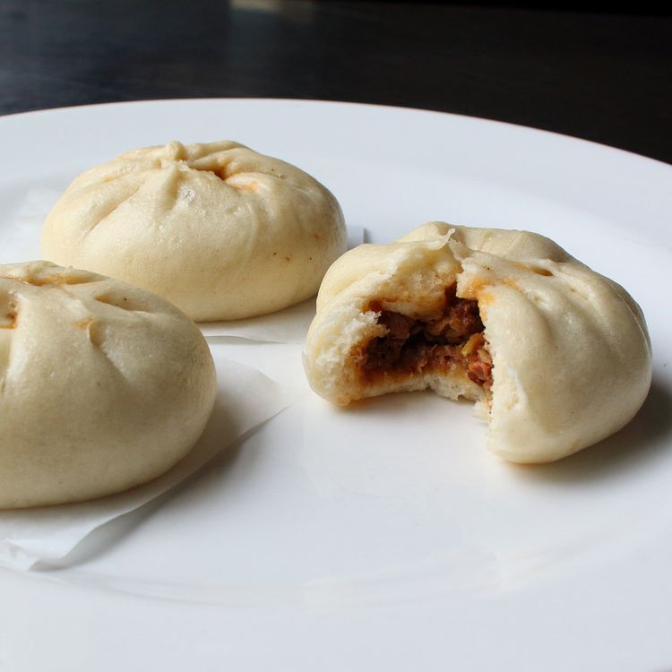

Steamed Barbecue Pork Buns Recipe

Description
Delicious, easy to make Barbecue pork buns.
Ingredients
- ¾ cup water
- 1 ½ teaspoons active dry yeast
- 2 teaspoons vegetable oil
- 1 ½ teaspoons white sugar
- 2 cups self-rising flour
- 2 cups diced barbecued pork, or to taste
- ¼ cup finely sliced green onions
- 1 pinch cayenne pepper, or to taste
- 2 teaspoons sesame oil
- ¼ cup hoisin sauce, or to taste
Steps
- Pour water into a bowl.
Sprinkle in yeast and let stand
until yeast softens and begins to form
a creamy foam, about 10 minutes. Add vegetable oil, sugar,
and self-rising flour. Mix using a wooden spoon until a shaggy dough comes together.
- Turn dough out onto your counter and knead into a smooth ball, about 10 minutes.
Transfer dough ball into a lightly oiled bowl.
Flip to lightly coat. Cover and let rise in a warm spot until doubled in size, about 2 hours.
- Combine pork, green onions, cayenne pepper, sesame oil, and hoisin sauce in a separate bowl. Mix well and refrigerate.
- Add a couple inches of water to a Dutch oven and set a bamboo steamer on top.
- Poke dough down to deflate and transfer to a lightly floured surface. Cut dough in half and roll each half into a long tube.
Divide each tube into 6 pieces. Roll each piece into a ball and press into a disk. Roll each disk until about 1/8-inch thick and
4 to 5 inches wide. Roll out edges so they are slightly thinner than the center.
- Transfer a spoonful of filling onto the center of each dough circle. Pinch edges together to form multiple small pleats, moistening edges with water if needed. Squeeze pleats together at the top to seal in the filling. Place pork buns on individual squares of parchment paper.
Transfer them to the cold steamer, cover, and let proof until noticeably puffed, 30 to 45 minutes.
- Bring the water in the Dutch oven to a boil over high heat. Set timer for 10 minutes.
Turn off heat and leave buns covered for 15 minutes. Uncover and transfer to plate.